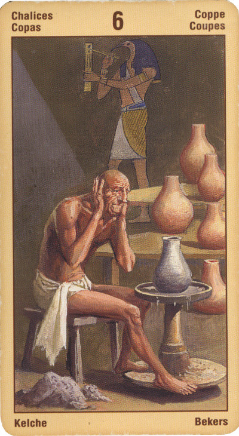

Шестёрка Кубков
Прямое положение: это карта прошлого и воспоминаний.
Проявление этой карты в раскладе может указывать на ситуацию, которая требует от вас терпимости, возвышения над суетой и истинной духовности.
В прямом положении карта означает воспоминания, прошедшие увлечения, от влияния которых вы освободились, исчезнувшие люди и вещи, прошедшее детство, ностальгия, доставлять радость другим. Длительное сообщество, доверие, которое базируется на пережитом вместе, истинная дружба. Здесь может подразумеваться также любовь к Родине и сама Родина. Старая дружба, не вызывающая трудностей в общении. Ощущение гармонии.
Шестерка Чаш характеризует человека как уверенную в себе и внутренне раскрепощенную личность. Появление этой карты в личном раскладе позволяет утверждать, что в ваших силах - формировать собственную судьбу (и уж во всяком случае, контролировать собственные эмоции).
Если вы хотите узнать, как будут развиваться те или иные события в вашей жизни, то, вытянув при гадании Шестерку Чаш, можете с уверенностью приниматься за намеченное дело: эта карта предсказывает благополучное продвижение к цели.
Особенно удачной Шестерка Чаш является в том случае, когда вы пытаетесь спрогнозировать отношения с окружающими (или же с любимым человеком). Этот Аркан не оставляет никаких сомнений по поводу того, что вы без труда добьетесь желаемого, не только не испортив отношений с близкими людьми, но и сделав их куда более прочными, чем прежде!
Шестерка Чаш в вашем раскладе - верный знак того, что прошлые неудачи закончились. А это, в свою очередь, говорит, что пришла пора забыть старые обиды и с энергией заняться устройством будущего!
Эту карту изображают по- разному, но кубки на ней всегда полны.Она сулит приятные встречи со старыми друзьями, воспоминания о счастливом прошлом,платоническая любовь, новые знакомства. Подарки, счастливый случай, поездка на курорт,отдых. Работа с детьми.
В перевернутом виде означает, что и такой прибыли (такого счастья) не будет, но не будет и ничего плохого, все останется, как было.
Иногда обращаться к прошлому жизненно необходимо, если впереди нас ждет рост и познание чего-то нового, однако в иных случаях мы должны избавляться от привязанности к событиям, которые уже произошли.
В перевернутом положении карта, наоборот, вся устремлена в будущее. Она означает новые возможности, открывающиеся впереди; грядущие события, расширение мировоззрения, предвидение грядущего.
В отрицательном значении: говорит, что человек живет прошлым в ущерб настоящему. Пора менять привычки и манеры,имидж. Сулит потерю старого друга.